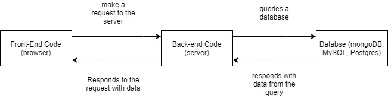
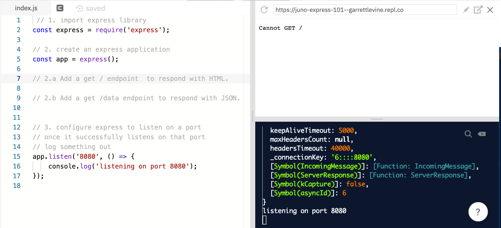
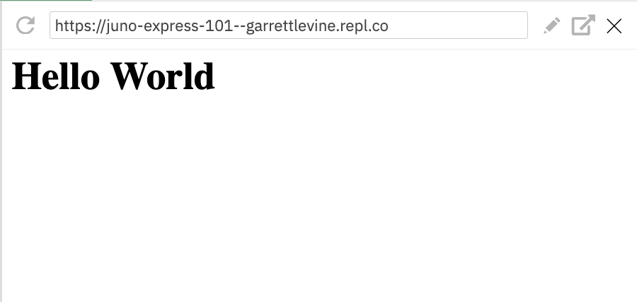
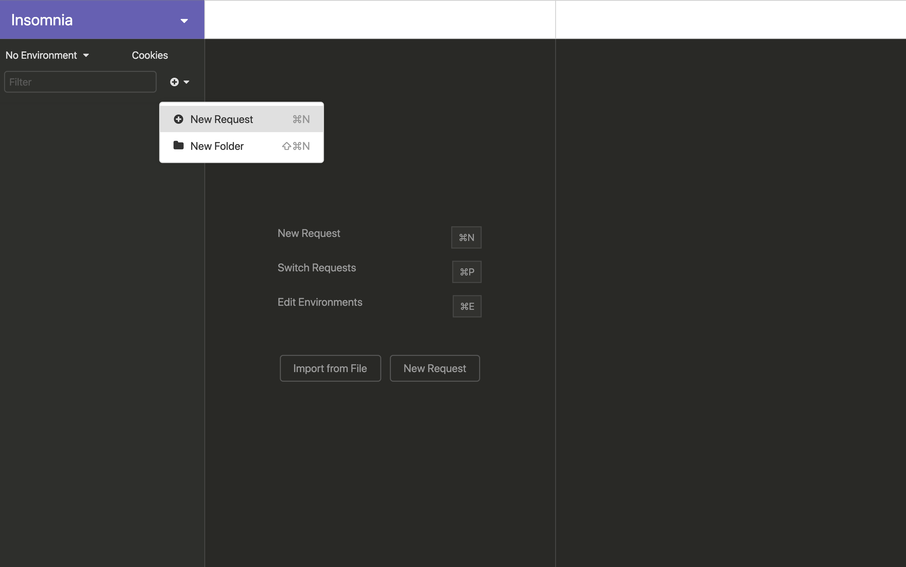
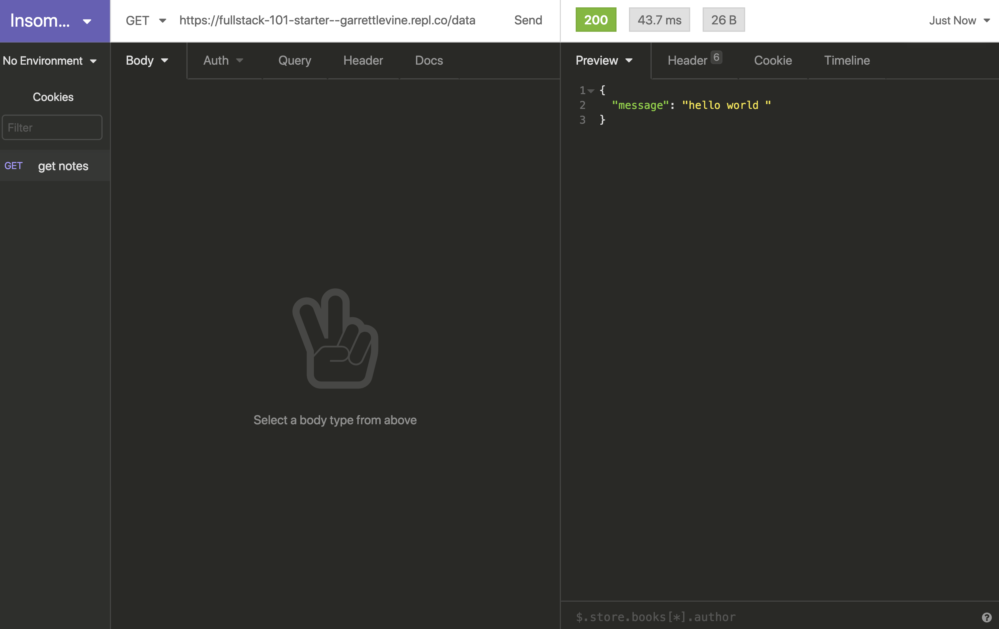
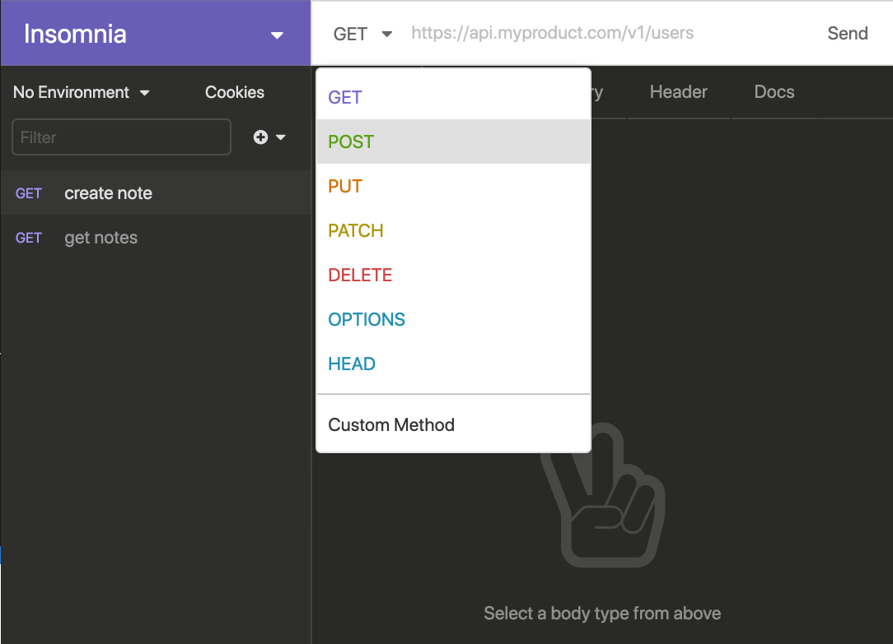
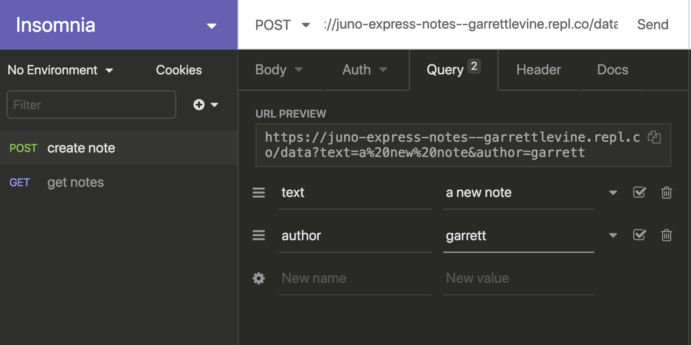
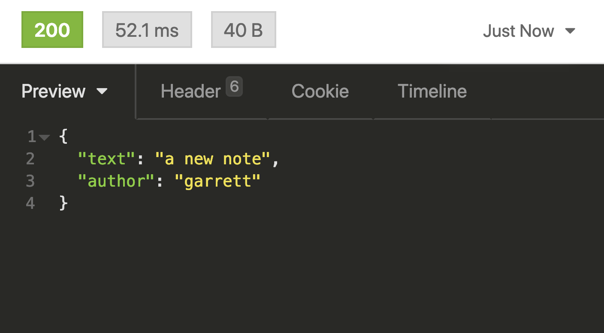
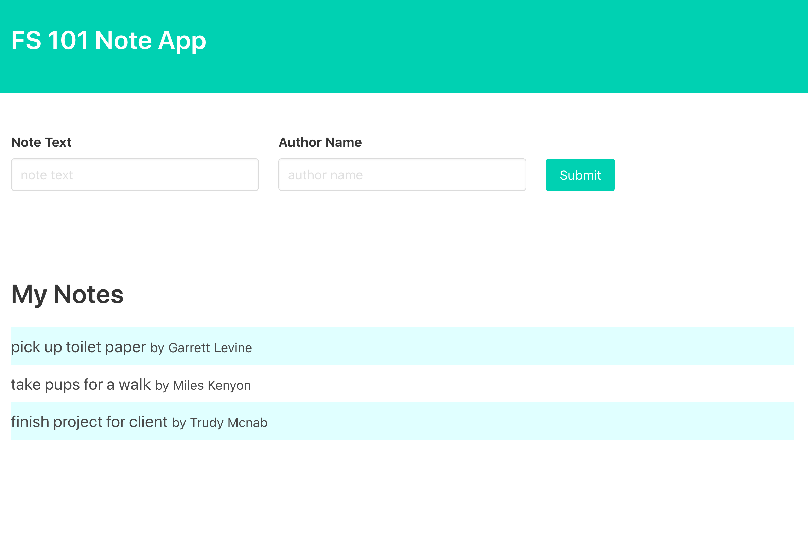

Welcome to Juno College
We’ve been teaching people to code since 2012, and we’ve mastered pairing the perfect students with the perfect material and learning environment. How do we know you’ll love Juno?
Don't just take our word for it.What We're Going to Cover
The goal of this workshop is to introduce basic concepts of creating a NodeJS/Express application.
We're going to write a web server which accepts and responds to incoming requests. We'll see how to integrate our web server with a small front-end application.
There's lots to learn about full-stack web development, and this is only the first step! To learn more, sign up for our Full-Stack Masterclass course.
Getting Started: Tools
Web Browsers
The main functionality of the browser is to present a web resource in the browser window. We're going to be writing our NodeJS code using an online editor, so a browser will be very important.
Choose a modern, evergreen, web browser that supports current web standards. Some example of evergreen browsers include Firefox and Chrome.
Repl.it
We're going to use a free online IDE (integrated development environment) to speed up learning NodeJS today. Let's sign up for an account!
Insomnia
We need to be able to make requests to our server, and easily see the response. To do this, we're going to make use of what's called a REST client.
Download and install the Insomnia REST client.
What is Full-Stack Development?
Full-stack development speaks to when a developer has experience working in the front-end and back-end aspects of the code base.
Often times this will extend to working with databases and data structures.
A single-page web application has a specific flow to it. Generally, it will have a robust Front-End component (React, VueJS, Angular) and that front-end code will make requests to a web server.
The server will then interact with a Database after receiving a request, and then respond to the requester with information.
The expectation of a full-stack developer is to have the understanding or ability to contribute to all aspects of this flow, be it the front-end, back-end, or database and data structures.
Often times a full-stack developer will have a specialization within these domains, but the expectation is that all can be worked on to varying degrees.
In this class we'll be creating a web application using NodeJS, but a server can exist in many languages (PHP, Java, Golang, Rust, Python, etc.).
Intro to NodeJS
NodeJS is a sever-side JavaScript programming language. This differs from the JavaScript we're familiar with in the browser, though there is a lot of overlap syntactically.
The JavaScript which exists in the browser is specific for that environment, and has access to APIs and libraries which are specifically concerned with browser interactions (fetch API, computer audio API, ge-location API, you can see the whole list here).
NodeJS, however, aims to be more agnostic of purpose.
It is intended to be a general purpose programming language and the libraries that exist within it are more oriented toward general computer programming goals as opposed to browser specific goals. As such, it has access to APIs and libraries concerning the operating system, encryption, command line options, and many more. You can see the whole list here.
Let's write some node JS
We'll be using Repl.it for our code-along today. Go ahead and open this repl, and then fork it into your own account.
As our first task, let's initialize a variable and then log it out.
// 1. Initialize a variable
const item = 'umbrella';
// 2. log out the variable
console.log(item);
// 'umbrella'
You can see that code we write in NodeJS it identical to what we may write browser JavaScript.
Let's warm up a little bit more practicing some familiar JavaScript methods concerning arrays and array interactions.
// 3. create an array of fruits
const fruits = ['apple', 'banana', 'orange'];
// 4. iterate over the array, logging a value each time
fruits.forEach((fruit) => {
console.log(fruit);
});
// 'apple', 'banana', 'orange'
// 5. write a function which removes a fruit from the array
// and call it, then log out the fruit array
function removeFruit(name) {
const i = fruits.indexOf(name)
fruits.splice(i, 1)
}
removeFruit('banana');
console.log(fruits)
// ['apple', 'orange']
We can access array methods the exact same way we're used to in browser based/front-end JavaScript. All of the prototype methods that we've used in browser based JS are still available to us.
Note:
You'll notice in Repl anytime we make a change the code is run for us. When working on your local machine, you'll need to run the code yourself.
This can be done by opening up your terminal, navigating to the directory with the file, and typing node ./index.js. You'll then see the output in your terminal.
Express Library
One of the most popular use-cases for NodeJS is creating web servers.
A web server is software which can accept and parse incoming requests (http/https). Generally it will accept an incoming request, and respond to that request with some data.
If you've ever interacted with a public API, you've interacted with a web server.
NodeJS has a standard HTTP library which allows us to create a server. However, we're going to be using popular lightweight HTTP library called Express. Express makes working with NodeJS's HTTP package more streamlined by providing us easy methods to access and respond to incoming requests to our web server.
Creating our First Application
In order to create a web server, we must first make use of the Express library.
Go ahead an open this starter Repl, and fork it so you have your own copy.
Here is the first difference we'll see between front-end JavaScript and NodeJS. We want to import the Express library, and so we'll make use of the require syntax.
const express = require('express');
What's this require word? Why can't we use import syntax?
Require is part of the standard library of NodeJS and allows us to import other modules into our code (either our own other files, or third-party libraries). Unfortunately we don't have access to import syntax in standard NodeJS. Import syntax is available to us in most front-end frameworks because the code we write there is being transpiled, but we aren't transpiling our code here. Instead of import we use require syntax, but it operates in very similar ways.
Now that we've required express, lets use express to create our first express application!
// 1. import express library
const express = require('express');
// 2. create an express application
const app = express();
What are we doing above? After we import express, we are using the express package to create an express 'application'.
This 'application' has a bunch of methods available to it, but the most important thing to get our application started is to tell the express app to listen on a port.
// 3. configure express to listen on a port
// once it successfully listens on that port
// log something out
app.listen('8080', () => {
console.log('listening on port 8080');
});
You'll see the .listen method takes two arguments, the first argument is the port to listen on, and the second argument is a callback function to execute once our application is successfully listening on this port.
Right now, we're just getting it to log out that we are listening on port 8080.
In your Repl, make sure to hit RUN at the top, and you'll see the code executes an the server begins running.
In the bottom right of the screen, we can see our terminal and it's output ('listening on port 8080'). At the top right we can see a browser window which says Cannot GET /.
Our application is running! But what is this 'error' we're getting in the browser window? Our server is running, but our application doesn't have an 'endpoint' to respond with any data to our request. What Request is being run? Well everytime the browser loads a page it's make a request to a webserver, and the webserver is configured to respond with HTML.
To get some data to show up we'll need to add an 'endpoint' to return respond to the request from our webserver. Let's add one.
Making an Endpoint
An endpoint can be thought of a channel to access our web server. To understand how to add an endpoint to our application, it's important to go over some standard concepts of REST web servers.
REST stands for Representational State Transfer, and it speaks to a set of rules and conventions that we will be using when designing our application. One of the two important aspects of a RESTful API are the HTTP methods and the status codes we choose to respond with.
HTTP Methods
There are 9 different request methods, but we'll be talking about 2 specifically. The GET and the POST Methods.
GET
This is used when requesting a specific resource, ie; getting a list of items, or a single item by it's ID.
POST
This is used when creating a new resource, ie; adding a new note to a todo list.
Let's add a GET request to our application. After we've declared our express app, we can add an endpoint to our app make use of the .get method!
const app = express();
app.get('/', (request, response) => {
});
The above code changes our web server to accept GET requests at the base route of /. The first argument of the .get method is the endpoint we want to establish, and the second argument is a callback function to execute once that route is 'hit'.
You'll notice the callback function defines two parameters for arguments that are provided when the callback is executed: request and response. These are two objects which give us access to a lot of information about the incoming request from the user and the way in which we can respond to that request.
For now, lets respond with some HTML. To our code add...
app.get('/', (request, response) => {
response.send(`<h1>Hello World</h1>`);
});
The response object that is passed into this callback function allows us to respond to the request using the .send() method.
This method accepts a string, an object, or HTML, sending that data back to the requester. If you restart your Repl server, you'll see that this HTML now appears in the browser in the top right.
Note:
We need to restart our Repl server manually now because there is always a process running, our express application.
You should see the HTML in the browser in the top right of the Repl window.
We can also send back a JSON response from this request instead of a HTML string.
This is useful when creating an API, because often times we want to respond with data and not an HTML string. Because the .send() method is really flexible, we can provide it a javascript object and it will convert that to JSON for us.
Let's try it out!
Let's add a new GET endpoint to our application.
After our previous endpoint, we can use the .get() method again to add another endpoint as long as the path is different than an existing endpoint.
Let's write a GET endpoint for '/data', and return a hello world message in JSON.
// 2.b Add a get endpoint to respond with JSON.
app.get('/data', (request, response) => {
response.send({ message: 'hello world' });
});
Restart the Repl so the changes take effect.
You'll notice that we're still seeing the old HTML message though. That's because we now need to make a GET request to /data, not /.
To do this, we'll now make use of Insomnia to show us any responses beyond a GET / .
Working with Insomnia
Go ahead an open your Insomnia applicaton. Insomnia is a great little tool which allows a lot of customization. If you're interested in learning more about Insomnia, head over to their site to check out more info.
We're going to create our first request by clicking the dropdown and then the `New Request` button.
It will prompt you to name the request, so go ahead and name it something like 'get message'.
Next, we're going to copy and paste the url of our app on REPL into this URL bar. It should look something like https://juno-express-101--{{YOUR ACCOUNT}}.repl.co.
If you press the send button, you should see the HTML returned to you just like on the REPL site. Pretty cool!
Now, let's add /data to the end of the url so we hit our other endpoint.
Prefect! Now we know that our application is working, and we can see that we recieve the JSON back from the server.
When you're a full-stack developer building a web server, it's generally much faster to use a tool like Insomnia to debug/test your applicaiton than it is to write a whole front-end UI, so we recommend getting comfy with a tool like this.
Creating an App
We're going to work through creating a really minimal note application.
Take a look at this starter repl and fork it to your own account. A few things have been added, so let's take a look at the code in here.
// import the express library
const express = require('express');
const uuid = require('uuid');
// import the notes from our data file.
const notes = require('./data');
// create an express application
const app = express();
// respond with all of our notes
app.get('/notes', (request, response) => {
response.send(notes);
});
app.use('/', express.static('public'))
// have the express application listen on a port.
app.listen(8080, () => {
console.log('listening on port 8080')'
});
Firstly, we've added a some starter data on ln: 6.
This represents out 'database'. We won't be going over integrating with a database in this lesson, but generally your information is stored in a permanent state.
For this lesson, it will be stored in memory and so it will not be permanent.
You'll notice that there is an endpoint of GET /notes .
Similar to our previous example when we sent back data on the /data endpoint (the JSON), we are sending back the data from the pre-loaded notes.
Lastly, before we listen on the port, we've added some curious method.
app.use('/', express.static('public')) is allowing our application to serve a whole directory to the user - you'll notice it's doing this because we're able to see an HTML file when we make a GET / request to our server.
app.use allows us to apply what's called middleware to our express application. We won't explore middleware in this lesson, but we can make use of the express.static middleware to staticly serve a directory to our requester.
We are telling this middleware to serve the public folder, which currently has an index.html file in it. As you can see, when you make a request to our node server at GET /, we see an website in our browser.
Adding a POST endpoint
Now that we have a more robust application, let's add a new endpoint. We want to be able to create new notes in our application.
To do so, we should make use of the POST HTTP method.
Similar to the .get() method, express allows us to add an endpoint using the .post() method. Let's add one at the POST /notes route like so;
// 1. Write POST endpoint to create a new note
app.post('/notes', (request, response) => {
});
This looks really similar to our GET endpoint! It even exists at the same route of /notes. How can we have two of the same routes?
This is because while they are the same URL route, we are writting two different requests. One is a GET request, and one is a POST request. When the server recieves one of these two requests, express will send the incoming request to the appropriate endpoint.
Just like our GET request we have access to the request and response - but now we're going to need to make use of a new value off of the request object.
Because we're creating a new note, our sever needs to be able to read data off of incoming request and add that data to the existing notes array.
To do this, we're going to be making use of query paramaters.
Have you ever examined a URL and seen https://google.com/?key=value&thing=potatos?
This is an example of query parameters being sent to a server.
Everything after the ? is a query parameter, and each parameter is separated by an & .
In Express, we're able to access the query parameters off the the request object using it's .query value, and then the key we're expecting to be there.
Let's grab the query parameters in our code.
// 1. Write POST endpoint to create a new note
app.post('/notes', (request, response) => {
const text = request.query.text;
const author = request.query.author;
console.log({ text, author });
response.send({ text, author });
});
You can see above that we are able to capture the values of an incoming request - but how do we actually send that?
You'll notice if you type /notes?text=my_note_text&author=me in to the browser OR make an request Insomnia, we don't see these values logged in our terminal.
This is because the browser makes a GET request. Remember, we've written this logic for a POST request
In order to test this out, we'll need to make a request using some help. Let's head back over to Insomnia.
In Insomnia, we can create a new request and set it to POST.
Next, let's make sure our URL is correct. It should be https://juno-express-notes--{YOUR-ACCOUNT-NAME}.repl.co/notes
Lastly, we can make use of the query tab to make sure we're setting the query parameters as expected.
And now that we're making a POST request to this endpoint, we can see the console.log() is working in our Repl terminal and we receive the response to our request in Insomnia.
Now let's use this incoming data to create a new note in our array.
We'll use similar logic to our little warm up earlier, but instead of appending fruits to an array, we can append a new not to the array. Let's give it a try, we want to;
- create a new note object with our fields (don't forget the id field, we'll make use of the UUID package for this using the uuid.v4() method)
- append it to our existing notes array
- respond to the request with the new note
// 1. Write POST endpoint to create a new note
app.post('/notes', (request, response) => {
const text = request.query.text;
const author = request.query.author;
const newNote = {
id: uuid.v4(),
text: text,
author: author,
};
notes.push(newNote);
response.send(newNote);
});
With the above code, we'll make a request to hit our endpoint using Insomnia.
If we get back a new note as a response, we can verify that this worked be calling our other endpoint to list all of our notes at GET /notes .
To do this, let's head back to Insomnia and make a new request called 'Get Notes'. Remember to set the appropriate URL and ensure it's a GET request.
We've made a POST request. We can successfully make a new item on our node server, and then list it out using a GET request.
There's a lot more that we could do on the node server, but let's jump to our small Front-End application to see how all of this is working!Making Requests from our Front-End
We have in front of us a small front-end component to this note web service we just wrote!
You'll notice that it's already working out the gate with the server we just wrote.
We're going to review the code that's been written to hook it up to the server, as a lot of the concepts ought to be review.
Open the pubic/index.js file on our Repl. This houses all of our front-end JavaScript code which has the ability to interact with browser APIs. This is being served alongside the index.html thanks to that express middlware we covered previously.
How are getting the notes from our web server? Let's take a look at this getNotes() functon.
function getNotes() {
// make a request to our GET /notes endpoint
fetch('/notes')
// parse the response and get the JSON
.then((response) => response.json())
// the notes as a json is available to us
.then((notes) => {
const noteNode = document.getElementById('noteList');
noteNode.innerHTML = '';
// for each note returned, template it on to the page
notes.forEach((note, i) => {
const isEven = i % 2 === 0;
const noteEl = templateNote(note, isEven);
noteNode.appendChild(noteEl);
})
})
.catch((err) => console.error(err));
}
We can see above that we're able to make requests to our web server without the address that we used in Insomnia. Why is this?
When we make requests to our web server, we're able to treat it as the same domain because our web server is the one who is serving this HTML and JavaScript.
Let's take a look at the code that we're calling when we create a note.
function createNote() {
// get the input elements from the page
const text = document.getElementById('noteText');
const author = document.getElementById('noteAuthor');
// make a post request to our web server
fetch(`/notes?text=${text.value}&author=${author.value}`, {
method: 'POST',
})
.then((resp) => resp.json())
.then((note) => {
text.value = '';
author.value = '';
})
.catch(err => console.log(err));
}
The function above grabs the values of the inputs and passes a URL like we used in our Insomnia request using a template literal to the fetch request (/notes?text=${text.value}&author=${author.value})
Once we get the response from the server, we are setting the values of the inputs to empty for a better user experience.
Lastly, this function is called in an event listener we've bound to our </form> element. Let's check out that code.
// wait for the page to load
document.addEventListener('DOMContentLoaded', () => {
document
// get the form by ID
.getElementById('noteForm')
// add an event listener
.addEventListener('submit', (e) => {
e.preventDefault();
// use a promise to make sure
new Promise((resolve, reject) => {
// first we createthe note
resolve(createNote());
})
.then(() => {
// then we get all the notes
getNotes();
});
});
});
With the above we're making sure that when the form is submitted we are
- creating the new note with our POST endpoint
- getting ALL the notes from out GET endpoint
We're making use of a promise to ensure that things occure exactly in that order.
And we've done it! We've got ourselves an application which makes use of a GET endpoint and a POST endpoint that we've written on our own!
Stretch Challenges
If you're looking to add more features to this application, think of ways to get add a
This will require using two new methods in express (.delete() and/or .put()) and array logic this we went over in our warm up.
Ready to Learn More?
This was a small taste of what the Full-Stack Masterclass covers. We have not covered;
- Working with React in a full-stack app
- PUT and DELETE endpoints
- Validating requests
- Error handling on our server
- Interacting with a Database
- Deploying applications
- Project organization and best practices
If thes topics excite you, join our next Full-Stack Masterclass courses!
Extra Resources
- Check out out this tutorial on working with MongoDb